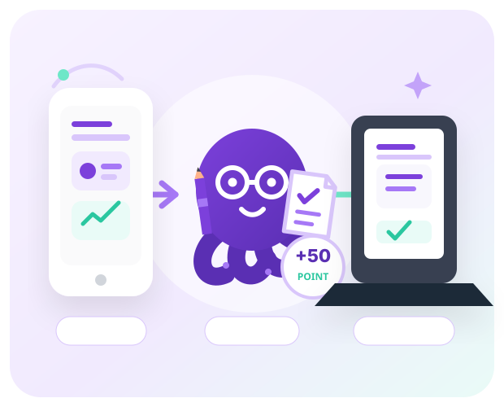

틀린 이유가 보이지 않습니다
정답과 점수만 확인해서는 어떤 생각과 문장을 바꿔야 할지 알 수 없습니다.
지루한 암기 대신, 성장이 보이는 TOPIK 학습
어휘·읽기·53번을 짧은 미션으로 즐기고 포인트를 모으세요. 모은 포인트로 54번 정밀 첨삭을 이용하면, 놓치던 약점을 알고 다시 쓰며 목표에 가까워질 수 있습니다.

학습자의 고민 · Pain Point
혼자 문제만 풀다 보면 무엇이 늘었고 무엇을 고쳐야 하는지 알기 어렵습니다.
정답과 점수만 확인해서는 어떤 생각과 문장을 바꿔야 할지 알 수 없습니다.
실력을 키우려면 반복 첨삭이 필요하지만 매번 비용을 내기는 부담스럽습니다.
목표는 분명해도 매일 같은 문제풀이를 반복하면 금방 지치기 쉽습니다.
옥토퍼스 성장 루프 · Solution
작은 미션의 성취감이 꾸준함을 만들고, 꾸준함이 구체적인 피드백과 재작성으로 이어집니다.
어휘·읽기·53번을 짧은 미션으로 나누어 매일 부담 없이 도전합니다.
미션을 완료할 때마다 포인트와 성취가 쌓여 다음 학습을 시작할 힘이 됩니다.
포인트로 54번 정밀 첨삭을 열고 감점 이유와 수정 방향을 확인한 뒤 다시 씁니다.
매일의 성장 도구 · Core Features
짧은 도전, 눈에 보이는 성장, 구체적인 피드백으로 공부의 재미를 이어 갑니다.
시험에 자주 나오는 어휘를 짧은 문제로 만나고 매일 하나씩 익힙니다.
오답을 유형별로 모아 내가 자주 놓치는 읽기 패턴을 한눈에 확인합니다.
그래프 핵심을 찾고 답안을 완성하며 기본 피드백으로 바로 고쳐 봅니다.
내용·논리·구성·문법·어휘를 항목별로 분석해 다음 답안의 방향을 찾습니다.
성장 과정 · How it works
오늘의 작은 도전부터 어려운 54번 재작성까지, 학습의 다음 단계가 분명합니다.
START
오늘의 어휘·읽기·53번 미션으로 가볍게 공부를 시작합니다.
GROW
완료한 미션이 늘어날수록 공부 습관과 서비스 내부 포인트가 함께 쌓입니다.
LEVEL UP
포인트로 54번 정밀 첨삭을 이용하고 약점을 반영해 답안을 완성합니다.
꾸준함의 보상 · Reward Loop
공부한 만큼 다음 단계가 열립니다.
기대할 수 있는 변화 · Expected Effect
약점을 알고 다시 쓰는 순간, 공부가 성장으로 바뀝니다.
이런 분께 추천 · For You
자주 묻는 질문 · FAQ
학습으로 모은 포인트는 54번 정밀 첨삭과 추가 학습 기능을 이용하는 데 사용할 수 있습니다.
어휘·읽기·53번을 짧은 미션으로 나누어 시작 부담을 낮춥니다. 미션을 완료하면 서비스 내부 포인트가 쌓이고, 이 포인트로 54번 정밀 첨삭을 이용하며 다음 목표를 만들 수 있습니다.
아니요. 서비스가 제공하는 점수는 학습을 돕기 위한 예상 점수와 분석이며 공식 시험 결과를 보장하지 않습니다.
어휘·읽기·쓰기 미션부터 포인트 적립, 54번 정밀 첨삭까지 이어지는 학습 흐름을 경험할 수 있습니다. 이용 일정과 방법은 신청자에게 안내해 드립니다.
무료 체험 · Start Today
쉽게 시작하고, 재미있게 이어 가고, 달라진 답안을 확인해 보세요. 무료 체험 신청자에게 이용 일정과 방법을 안내해 드립니다.
신청 정보 저장 완료
입력한 정보는 이 브라우저에만 저장되며 외부 서버로 전송되지 않습니다.